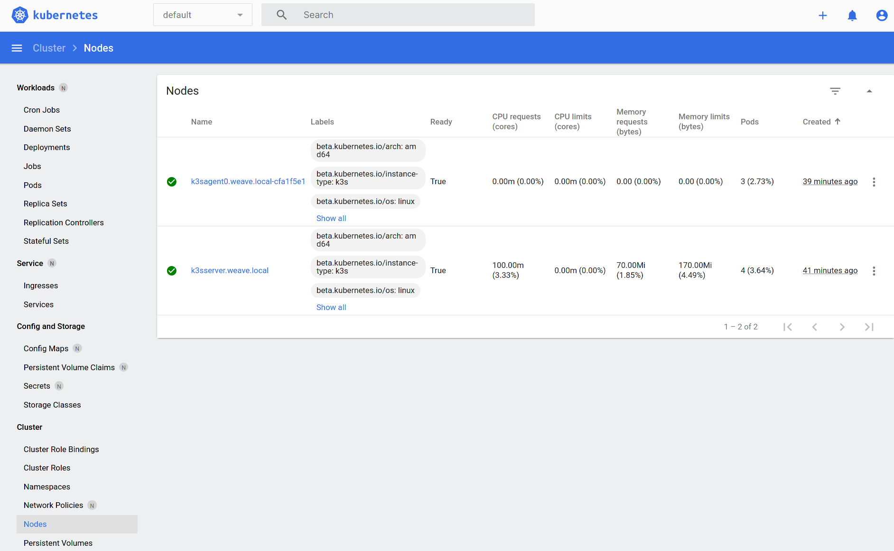

M3s - Apache Mesos Kubernetes Framework
Introduction
M3s is a Golang based Apache Mesos Framework to run and deploy Kubernetes through K3s from Rancher.
Requirements
- Apache Mesos min 1.6.0
- Mesos with SSL and Authentication is optional
- Persistent Storage to store Kubernetes data
How To use
version: '3'
services:
redis:
image: redis
m3s:
image: avhost/mesos-m3s:master
depends: redis
environment:
- DOMAIN=.mini
- DOCKER_CNI=mini
- K3S_AGENT_COUNT=1
- REDIS_SERVER=redis.mini:6379
- K3S_TOKEN=l9WpVPQQw2sfNQRbxJDXjZx61wMpXDaB
- AUTH_USERNAME=user
- AUTH_PASSWORD=password
ports:
- 10000
Screenshots
Mesos

Kubernetes Dashboard
Get the token and start the proxy.
kubectl -n kubernetes-dashboard describe secret admin-user-token | grep '^token'
kubectl proxy
And then open the browser:
http://localhost:8001/api/v1/namespaces/kubernetes-dashboard/services/https:kubernetes-dashboard:/proxy/

Traefik
kubectl port-forward $(kubectl get pods --selector "app.kubernetes.io/name=traefik" --output=name -n kube-system) -n kube-system 9000:9000

Configuration
The following environment variables are available:
| Variable | Default | Description |
|---|---|---|
| FRAMEWORK_USER | root | Framework user used in Apache Mesos |
| FRAMEWORK_NAME | m3s | Name of the framework in Apache Mesos but also used as Redis prefix |
| FRAMEWORK_ROLE | m3s | Framework role used in Apache Mesos |
| FRAMEWORK_PORT | 10000 | Port these framework is listening |
| FRAMEWORK_HOSTNAME | ${HOSTNAME} | The frameworks hostname |
| MESOS_USERNAME | Username to authenticate against Mesos | |
| MESOS_PASSWORD | Password to authenticate against Mesos | |
| MESOS_MASTER | 127.0.0.1:5050 | Adress of the Mesos Master. If you use mesos-dns, use leader.mesos |
| MESOS_CNI | Mesos CNI M3s should use | |
| MESOS_SSL | false | Enable SSL for the communication to the Mesos Master |
| MESOS_PRINCIPAL | Mesos Principal | |
| PORTRANGE_FROM | 31000 | Set the portrange, M3s is suposed to use for the container outside of K8 |
| PORTRANGE_TO | 32000 | |
| LOGLEVEL | info | Information Level (info, warn, error, debug) |
| DOCKER_CNI | bride | If we do not use Mesos CNI, we can also use docker network |
| DOCKER_SOCK | The docker sock file | |
| DOCKER_SHM_SIZE | 30gb | Size of dockers shared memory |
| DOMAIN | .local | The domain of the hostnames. As example, if you use weave cni, it would be weave.local |
| AUTH_USERNAME | Username to authenticate against these framework | |
| AUTH_PASSWORD | Password to authenticate against these framework | |
| K3S_TOKEN | 123456789 | K8 token for the bootstrap |
| K3S_CUSTOM_DOMAIN | cloud.local | The network Domain we will use for the K3s cni |
| K3S_SERVER_STRING | /usr/local/bin/k3s server --cluster-cidr=10.2.0.0/16 --service-cidr=10.3.0.0/16 --cluster-dns=10.3.0.10 --kube-controller-manager-arg='leader-elect=false' --disable-cloud-controller --kube-scheduler-arg='leader-elect=false' --snapshotter=native --flannel-backend=vxlan | These is the string we will use to start the K3s server. M3s will add several other parameters. |
| K3S_SERVER_CPU | 0.1 | Resources for the K3s Server container |
| K3S_SERVER_MEM | 1200 | |
| K3S_SERVER_CONSTRAINT | Tell Mesos to start the K3s server on this hostname | |
| K3S_AGENT_STRING | /usr/local/bin/k3s agent --snapshotter=native --flannel-backend=vxlan | These is the string we will use to start the K3s agent. M3s will add several other parameters. |
| K3S_AGENT_CPU | 0.1 | Resources for the K3s Agent container |
| K3S_AGENT_MEM | 1200 | |
| K3S_AGENT_LABELS | [{"key":"traefik.enable","value":"true"},{"key":"traefik.http.routers.m3s.entrypoints","value":"web"},{"key":"traefik.http.routers.m3s.service","value":"m3s-http"},{"key":"traefik.http.routers.m3s.rule","value":"HostRegexp(example.com, {subdomain:[a-z]+}.example.com)"}] | Configure custom labels for the container. In these example, we will use lables for traefik. |
| REDIS_PASSWORD | Redis Passwort for authentication | |
| REDIS_SERVER | 127.0.0.1:6379 | Redis Server IP and port |
| BOOTSTRAP_URL | https://raw.githubusercontent.com/AVENTER-UG/mesos-m3s/master/bootstrap/bootstrap.sh | Bootstrap Script to pre configure the server/agent container |
| SKIP_SSL | true | Skip SSL Verification |
| SSL_CRT_BASE64 | <cat server.crt | base64 -w 0> |
| SSL_KEY_BASE64=<cat server.key | base64 -w 0> | SSL Key Content as base64 |
| K3S_DS_CONSTRAINT | Tell Mesos to start the datastore on this hostname | |
| K3S_AGENT_COUNT | 1 | Amount of running K3s agents |
| K3S_AGENT_CONSTRAINT | Tell Mesos to start the K3s agent on that hostname | |
| K3S_DOCKER | true | Use docker container as K8 runtime |
| DS_CPU | Resources for the datastore container | |
| DS_MEM | ||
| DS_DISK | ||
| DS_PORT | 3306 | Datastore Portnumber |
| IMAGE_K3S | avhost/ubuntu-m3s | Ubuntu M3s Docker Image |
| IMAGE_ETCD | bitnami/etcd | Docker Image for Etcd al Datastore |
| IMAGE_MYSQL | mariadb | Docker Image for MaraiDB as Datastore |
| VOLUME_DRIVER | local | Volume driver docker should use to handle the volume |
| VOLUME_K3S_SERVER | /data/k3s/server/ | Volume name to persist the k3s server data |
| VOLUME_DS | /data/k3s/datastore/ | Volume name to persists the datastore data |
| HEARTBEAT_INTERVAL | 15s | Check the state every 'n seconds |
M3s CLI Installation for Mesos-CLI
If you do not already have installe the mesos cli, please follow the steps under "Install Mesos-CLI" first.
The installation of the M3s plugin for mesos-cli is done in few steps.
First, edit the mesos-cli config file.
vim .mesos/config.toml
Add the absolute path of the plugin into the plugin array:
# The `plugins` array lists the absolute paths of the
# plugins you want to add to the CLI.
plugins = [
"/example/mesos-m3s/mesos_cli/m3s"
]
[m3s]
principal = "<framework username>"
secret = "<framework password>"
Now we will see the M3s plugin in mesos cli:
mesos help
Mesos CLI
Usage:
mesos (-h | --help)
mesos --version
mesos <command> [<args>...]
Options:
-h --help Show this screen.
--version Show version info.
Commands:
agent Interacts with the Mesos agents
config Interacts with the Mesos CLI configuration file
m3s Interacts with the Kubernetes Framework M3s
task Interacts with the tasks running in a Mesos cluster
Install Mesos-CLI
yum install python3 python3-venv
git clone http://github.com/apache/mesos
cd mesos/src/python/cli_new
export VIRTUALENV_DIRECTORY=~/.virtualenvs/mesos-cli
export PYTHON=python3
./bootstrap
M3s CLI Usage
The M3s framework does support the new version of mesos-cli.
The following parameters are currently supported:
mesos m3s
Interacts with the Kubernetes Framework M3s
Usage:
mesos m3s (-h | --help)
mesos m3s --version
mesos m3s <command> (-h | --help)
mesos m3s [options] <command> [<args>...]
Options:
-h --help Show this screen.
--version Show version info.
Commands:
kubeconfig Get kubernetes configuration file
list Show list of running M3s frameworks
scale Scale up/down the Manager or Agent of Kubernetes
status Get out live status information
version Get the version number of Kubernetes
List all M3s frameworks
mesos m3s list
ID Active WebUI Name
2f0fc78c-bf81-4fe0-8720-e27ba217adae-0004 True http://andreas-pc:10000 m3s
Get the kubeconfig from the running m3s framework
mesos m3s kubeconfig 2f0fc78c-bf81-4fe0-8720-e27ba217adae-0004
Scale up/down Kubernetes services
We can scale up/down several Kubernetes services.
mesos m3s scale
Scale up/down the Manager or Agent of Kubernetes
Usage:
mesos m3s scale (-h | --help)
mesos m3s scale --version
mesos m3s scale [options] <framework-id> <count>
Options:
-a --agent Scale up/down Kubernetes agents
-e --etcd Scale up/down etcd
-h --help Show this screen.
-m --manager Scale up/down Kubernetes manager
The "count" is the number of how many instances of the selected service should run.
As example:
mesos m3s scale --agent 2f0fc78c-bf81-4fe0-8720-e27ba217adae-0004 2
M3s Status overview
The status command support two different flags.
mesos m3s status
Get out live status information
Usage:
mesos m3s status (-h | --help)
mesos m3s status --version
mesos m3s status [options] <framework-id>
Options:
-h --help Show this screen.
-k --kubernetes Give out the Kubernetes status.
-m --m3s Give out the M3s status.
Description:
Get out live status information
--kubernetes (in developing) will give out the stats of the kubernetes environment.
--m3s Show the current status of the M3s services.
mesos m3s status -m 2f0fc78c-bf81-4fe0-8720-e27ba217adae-0004
{"Server":"TASK_RUNNING","Agent":"TASK_RUNNING","API":"ok","Etcd":"TASK_RUNNING"}
Kubectl Usage with M3s
There are a lot of website abotu "how to use kubectl". Therefore we will only describe how to use it together with M3s.
First of all, we need the kubernetes config. To get it, we have to use the mesos-cli. M3s can run multiple times, thats why we have to choose the right M3s framework.
mesos m3s list
ID Active WebUI Name
2f0fc78c-bf81-4fe0-8720-e27ba217adae-0004 True http://m3sframeworkserver:10000 m3s
With the framework ID, we can get out the kubernetes config.
mesos m3s kubeconfig 2f0fc78c-bf81-4fe0-8720-e27ba217adae-0004 > .kube/config
Let us have a look into the config file.
cat .kube/config
apiVersion: v1
clusters:
- cluster:
certificate-authority-data: <DATA>
server: https://<MESOS-WORKER>:31862
name: default
contexts:
- context:
cluster: default
user: default
name: default
current-context: default
kind: Config
preferences: {}
The config file include the certificate to authenticate against the kubernetes cluster, and also the server URL. Like you see, the server URL is one of the Mesos Agents with a dynamic port.
With these config file, we can use kubernetes as we know it.
As example:
kubectl get nodes
NAME STATUS ROLES AGE VERSION
k3sagent0.weave.local-b5d0de31 Ready <none> 40m v1.21.1+k3s1
k3sserver.weave.local Ready control-plane,master 42m v1.21.1+k3s1
In our case, we use weaveworks as container network under Mesos, thats why the names of the kubernetes nodes contain a "weave.local" domain. Basically, M3s can run under every container network. But it's important that the names of the containers are resolvable.
Now let us have a look which Kubernetes services are running by default.
kubectl get svc --all-namespaces
NAMESPACE NAME TYPE CLUSTER-IP EXTERNAL-IP PORT(S) AGE
default kubernetes ClusterIP 10.3.0.1 <none> 443/TCP 47m
kube-system kube-dns ClusterIP 10.3.0.10 <none> 53/UDP,53/TCP,9153/TCP 46m
kube-system metrics-server ClusterIP 10.3.198.101 <none> 443/TCP 46m
kube-system traefik LoadBalancer 10.3.48.210 10.1.1.10,10.1.1.11 80:31455/TCP,443:31347/TCP 44m
kubernetes-dashboard dashboard-metrics-scraper ClusterIP 10.3.201.186 <none> 8000/TCP 47m
kubernetes-dashboard kubernetes-dashboard ClusterIP 10.3.43.87 <none> 443/TCP 47m
Scale up/down Kubernetes Service
To scale Kubernetes services, we have to call the following API. <count> is the number of all running processes.
curl -X GET -u <username>:<password> http://127.0.0.1:10000/api/m3s/v0/<server|agent|etcd>/scale/<count>
Show count of running Kubernetes Servers/Agents
To get out information about the current running and/or expected Kubernetes Servers/Agents, we can do the following call.
curl -X GET -u <username>:<password> http://127.0.0.1:10000/api/m3s/v0/<server|agent>/scale
Get Kubeconfig
Get out the kubernetes config file
curl -X GET -u <username>:<password> http://127.0.0.1:10000/api/m3s/v0/server/config
Get Kubernetes Version
Get out the kubernetes version
curl -X GET -u <username>:<password> http://127.0.0.1:10000/api/m3s/v0/server/version
Get status of the M3s services
Get out the M3s status information
curl -X GET -u <username>:<password> http://127.0.0.1:10000/api/m3s/v0/status/m3s
Create NGINX ingress with traefik in M3S
With these example we will create a nginx Webserver and publish the Website with the traefik 2.x ingress.
kubectl create -f nginx.yaml
apiVersion: apps/v1
kind: Deployment
metadata:
name: nginx-deployment
namespace: default
labels:
app: nginx
spec:
selector:
matchLabels:
app: nginx
replicas: 1
template:
metadata:
labels:
app: nginx
spec:
containers:
- name: nginx
image: nginx:1.14.2
ports:
- name: web
containerPort: 80
kubectl create -f nginx-service.yaml
apiVersion: v1
kind: Service
metadata:
name: nginx-service
spec:
ports:
- protocol: TCP
name: web
port: 80
selector:
app: nginx
kubectl create -f nginx-traefik.yaml
apiVersion: traefik.containo.us/v1alpha1
kind: IngressRoute
metadata:
name: nginx-traefik
namespace: default
spec:
entryPoints:
- web
routes:
- match: Host(`your.example.com`)
kind: Rule
services:
- name: nginx-service
port: 80
In the traefik Dasboard we will see our new rule:
kubectl port-forward $(kubectl get pods --selector "app.kubernetes.io/name=traefik" --output=name -n kube-system) -n kube-system 9000:9000

Now we can try to access nginx via traefik. First, we have to know the port of the k3sagent.
dig _http._k3sagent._tcp.m3s.mesos SRV
; <<>> DiG 9.11.4-P2-RedHat-9.11.4-26.P2.el7_9.3 <<>> _http._k3sagent._tcp.m3s.mesos SRV
;; global options: +cmd
;; Got answer:
;; ->>HEADER<<- opcode: QUERY, status: NOERROR, id: 4134
;; flags: qr aa rd ra; QUERY: 1, ANSWER: 1, AUTHORITY: 0, ADDITIONAL: 1
;; QUESTION SECTION:
;_http._k3sagent._tcp.m3s.mesos. IN SRV
;; ANSWER SECTION:
_http._k3sagent._tcp.m3s.mesos. 60 IN SRV 0 1 31863 k3sagent-kzk51-s0.m3s.mesos.
;; ADDITIONAL SECTION:
k3sagent-kzk51-s0.m3s.mesos. 60 IN A 10.1.1.11
;; Query time: 2 msec
;; SERVER: 127.0.0.1#53(127.0.0.1)
;; WHEN: Wed Aug 04 09:08:47 UTC 2021
;; MSG SIZE rcvd: 111
As we can see, the port is 31863 for the port 80. The agents IP is 10.1.1.11. If we have multiple k3sagents, we will see all IP adresses.
These IP adress we have to add into the /etc/hosts file.
10.1.1.11 your.example.com
Now we can access nginx:
curl -vvv your.example.com:31863
Containerd sideload configuration
M3s is a high flexible mesos framework. The decision to use a bootstap script give us the possibility to change the default configuration of K3s. These feature is important if we need access to a private insecure container registry. The following steps should be a example how to use it.
- Create a repository with a copy of the official
bootstrap.sh - In the same repository, create a
config.toml.tmplfile with the following content:
[plugins.opt]
path = "/var/lib/rancher/k3s/agent/containerd"
[plugins.cri]
stream_server_address = "127.0.0.1"
stream_server_port = "10010"
enable_selinux = false
sandbox_image = "rancher/pause:3.1"
[plugins.cri.containerd]
disable_snapshot_annotations = true
snapshotter = "native"
[plugins.cri.cni]
bin_dir = "/var/lib/rancher/k3s/data/current/bin"
conf_dir = "/var/lib/rancher/k3s/agent/etc/cni/net.d"
[plugins.cri.containerd.runtimes.runc]
runtime_type = "io.containerd.runc.v2"
[plugins.cri.registry.mirrors."<MY_INSECURE_REGISTRY>"]
endpoint=["https://<MY_INSECURE_REGISTRY>"]
[plugins.cri.registry.configs."<MY_INSECURE_REGISTRY>".tls]
insecure_skip_verify = true
- In the
K3SFRAMEWORK_TYPE == "agent"section, we will add the following lines:
curl http://<MY_GIT_REPO>/m3sbootstrap/config.toml.tmpl > $MESOS_SANDBOX/config.toml.tmpl
mkdir /var/lib/rancher/k3s/containerd
cp $MESOS_SANDBOX/config.toml.tmpl /var/lib/ranger/k3s/containerd/
- Tell the M3s framework to use the custom bootstrap.sh.
export BOOTSTRAP_URL="http://<MY_GIT_REPO>/m3sbootstrap/bootstrap.sh"
- Done